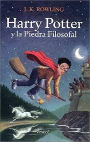
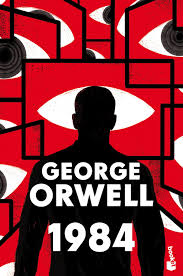

Infantil

Recomendación del mes
Momo
Momo, escrita por Michael Ende, es una novela que cuenta la historia de una niña llamada Momo, quien vive en las ruinas de un antiguo anfiteatro. Momo tiene una habilidad especial para escuchar a las personas, lo que la convierte en una amiga querida por todos. Sin embargo, su mundo se ve amenazado por los "hombres grises", unos seres misteriosos que roban el tiempo de las personas, dejándolas atrapadas en una vida rutinaria y sin alegría. La lucha de Momo por devolver el tiempo perdido y restaurar la felicidad es el corazón del relato. Es una reflexión sobre el valor del tiempo, la importancia de las relaciones humanas y cómo la sociedad moderna puede perder de vista lo esencial.
Juvenil
Recomendación del mes
Harry Potter
Harry Potter y la piedra filosofal, de J.K. Rowling, es el primer libro de la famosa saga. La historia sigue a Harry Potter, un niño huérfano que descubre en su undécimo cumpleaños que es un mago. Harry es llevado a un colegio de magia, donde comienza a conocer un mundo lleno de hechizos, criaturas mágicas y misterios. A lo largo del curso, Harry hace nuevos amigos y enfrenta desafíos que le ayudarán a entender más sobre su pasado y su conexión con un oscuro personaje del mundo mágico. El libro está lleno de aventuras, magia y valores como la amistad, la valentía y la superación personal.
Adulto
Recomendación del mes
1984
1984, de George Orwell, es una novela distópica que se desarrolla en un futuro totalitario en el que el gobierno, conocido como "El Partido", controla absolutamente todos los aspectos de la vida de los ciudadanos. La historia sigue a Winston Smith, un hombre que vive en una sociedad donde la libertad de pensamiento está prohibida y la realidad es manipulada constantemente. El Partido, encabezado por la figura omnipresente de "Gran Hermano", utiliza la vigilancia y la represión para mantener el control. A medida que Winston comienza a cuestionar el régimen, se enfrenta a las terribles consecuencias de desafiar el sistema. La novela aborda temas como la libertad, el poder, la opresión y la manipulación de la verdad.